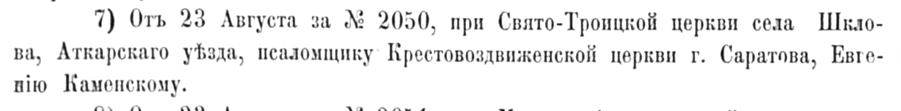

Глава III
Мой прадед Евгений: храм, хор и Шклово
Евгений Иванович Каменский родился 10 февраля 1880 года в селе Порзово Петровского уезда Саратовской губернии. Он был сыном священника Ивана Васильевича Каменского и Веры Дмитриевны Добролюбовой-Каменской. Его путь был связан с тем же кругом: Петровское духовное училище, Саратовская семинария, церковное пение, педагогическая работа, приход.
После семинарии Евгений Иванович работал учителем пения в Саратовском Мариинском приюте. До Шклова он уже был связан с голосом, хором, обучением и детским учреждением. Эта деталь делает его биографию особенно живой.

Мой прадед Евгений Иванович Каменский. Фото ориентировочно начало XX века.
В марте 1904 года он был определён псаломщиком к Крестовоздвиженской церкви города Саратова.


Фотография с видом Крестовоздвиженского монастыря, выполненная в нач. ХХ века. Приблизительная датировка: с 01.07.1900 г. По 01.07.1910 г. (https://sobory.ru/photo/517167)
А 23 августа 1906 года получил священническое место при Свято-Троицкой церкви села Шклово Аткарского уезда.
 |
 |
|---|

С этого момента начинается главная часть его жизни. Шклово стало для него местом дела. Там он служил, учил, занимался хором, участвовал в перестройке и расширении храма. 9 октября 1916 года в Шклово состоялось торжественное освящение перестроенного приходского храма во имя Святой Троицы. Позднее статья об этом событии в «Саратовских епархиальных ведомостях» стала одним из главных документов книги.
 |
|
|---|


В этой дате есть особая сила. 1916 год. До революции остаётся совсем немного. Старая Россия ещё строит и освящает храмы, приход ещё собирается на торжество, хор ещё звучит. Но за горизонтом уже другой век. Поэтому статья об освящении храма в Шклово для меня — последний большой светлый документ перед разломом.
Евгений Иванович для меня — не только прадед. Он человек, вокруг которого сошлись храм, хор, школа, приходская община и три семейные линии: Каменские, Добролюбовы и Фисейские. В дореволюционной части книги он становится одной из главных фигур.
После него история семьи меняет тон. То, что раньше было служением, позже станет темой, о которой будут молчать.